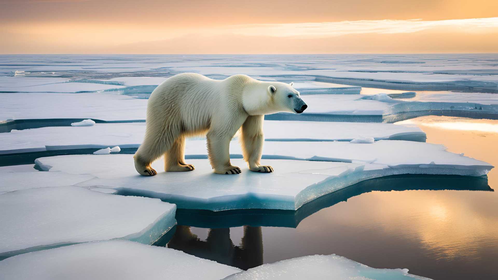
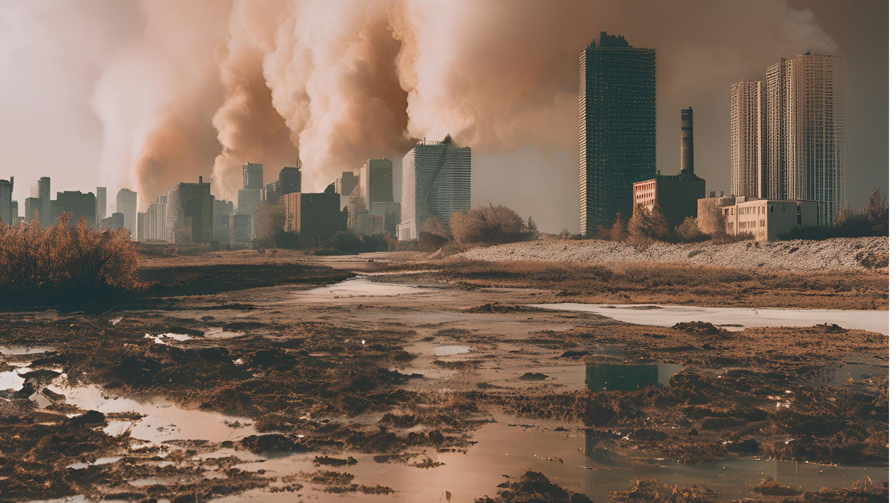

Definicion
El fenómeno del Niño es un evento climático que se caracteriza por el calentamiento anómalo de las aguas del océano Pacífico ecuatorial. Este fenómeno tiene un impacto significativo en el clima global y puede alterar patrones meteorológicos en diversas regiones del mundo.
Causas
El fenómeno del Niño ocurre debido a la interacción entre la atmósfera y el océano. Normalmente, los vientos alisios soplan de este a oeste, empujando las aguas cálidas hacia el oeste del Pacífico. Sin embargo, durante un evento de El Niño, estos vientos se debilitan o incluso pueden invertirse, permitiendo que las aguas cálidas se desplacen hacia el este.
Efectos
- Clima Global:
El fenómeno del Niño puede provocar cambios en las precipitaciones y temperaturas en diferentes partes del mundo - Impacto en la Agricultura:
Los cambios en el clima pueden afectar la producción agrícola, llevando a cosechas fallidas en algunas áreas y a un exceso en otras.
Frecuencia
El fenómeno del Niño no ocurre en intervalos regulares, pero generalmente se presenta cada 2 a 7 años. Su duración puede variar, durando desde varios meses hasta más de un año.
Las agencias meteorológicas y oceanográficas monitorean el fenómeno del Niño utilizando datos de satélites y boyas en el océano. Esto permite predecir su ocurrencia y evaluar sus posibles impactos.

Desastres Naturales

Huracanes
El aumento de las temperaturas del océano contribuye a la formación de huracanes más poderosos. Estos fenómenos pueden causar inundaciones devastadoras, vientos destructivos y daños significativos a las infraestructuras.
Inundaciones
El aumento del nivel del mar, combinado con lluvias extremas, puede provocar inundaciones costeras y urbanas. Las ciudades y comunidades cercanas a cuerpos de agua son especialmente vulnerables a estos eventos, que pueden causar daños extensos y desplazamiento de personas. Estos desastres son ejemplos de cómo el cambio climático está afectando nuestro entorno y aumentando la frecuencia y severidad de eventos naturales.


Sequias
El cambio climático altera los patrones de precipitación, lo que puede resultar en sequías severas en ciertas regiones. Esto afecta la disponibilidad de agua, la agricultura y puede llevar a crisis alimentarias.